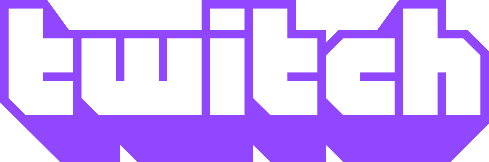

Twitch — це платформа для онлайн відеотрансляцій, що належить Twitch Interactive, дочірній компанії Amazon.com. [3]Представлений в червні 2011 р. як відгалуження від платформи відеотрансляцій загального поширення,Justin.tv, сайт, в першу чергу, зосереджується на потоковій трансляції відеоігор, включаючи трансляції кіберспортивних змагань, креативного контенту, розділ «реальне життя» та останнім часом музичні передачі. Вміст на сайті можна переглянути в прямому ефірі або за допомогою відео за запитом.
На ранніх етапах популярність Twitch була порівняно невеликою, порівняно з Justin TV, де в жовтні 2013 р. було 45 млн унікальних глядачів.[4] Але до лютого 2014 р. Twitch посів четверте за величиною джерело пікового інтернет-трафіку в США. У той же час материнська компанія Justin.tv була ребрендована як Twitch Interactive, щоб представити зміну напрямку діяльності, Justin.tv був закритий у серпні 2014 року. Twitch був підтриманий одним з найуспішніших американських бізнес-інкубатором Y Combinator та викуплений у серпні 2014 року компанією Amazon за 970 мільйонів доларів США[5], що пізніше призвело до впровадження синергії з передплатою компанії Amazon Prime. Twitch пізніше придбав Curse, засіб спілкування ігрової спільноти в Інтернеті, і ввів засоби для придбання ігор за допомогою посилань на трансляції, а також програму, яка дозволяє стрімерам отримувати комісію від продажу ігор, в які вони грають.
У 2015 році Twitch оголосив, що має більше 1,5 мільйонів мовників та 100 мільйонів користувачів[6] на місяць.
Зміст
- Мета
- Історія
- Зростання
- Витік даних
- Доступність на різних платформах
- Контент та глядач
- Благодійність
- Заборонений контент
- Емоції
- Українська мова
- Партнерська програма
- Див. також
- Примітки
- Посилання
Мета
Метою сайту є забезпечення максимального зв'язку між аудиторією та гравцем. Цей зв'язок забезпечує «живий» чат, який дає змогу моментально коментувати події і таким чином донести до гравця враження та думки глядачів. Крім того, на сайті існують платні підписки та повідомлення, які мають виділення у чаті. За допомогою цих особливостей у глядачів складається враження присутності поруч із гравцем та вплив на ігровий процес.